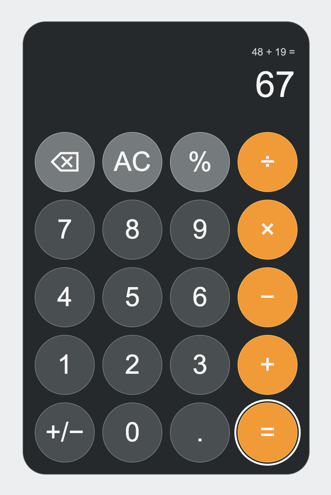

2026학년도 2학기 실전웹서비스개발
실전 웹서비스개발 – 3주차
JavaScript와 TypeScript의 문법을 통한 실행 흐름과 코드 구조 이해
LECTURE 03
01
웹과 JavaScript의 발전
웹의 구성 요소와 JavaScript의 등장·표준화 과정
JavaScript의 역할
사용자 입력에 따른 데이터 처리와 화면 갱신 과정
사용자 입력 → JavaScript 처리 → 화면 변화
- 입력에 반응하기 · 클릭이나 키보드 입력이 발생하면 정해진 코드 실행
- 데이터 처리하기 · 값을 저장하고, 조건에 따라 판단하고, 함수로 작업 수행
- 결과 반영하기 · 처리한 결과에 맞춰 화면의 내용과 상태 갱신
오늘의 학습 목표
- JavaScript의 기본 문법과 코드 실행 순서를 배우고, 웹페이지가 변화하는 과정 이해
JavaScript의 탄생
웹페이지의 상호작용을 위해 등장한 JavaScript의 배경
1995 · Netscape
- 정적인 문서에서 상호작용으로 · 입력에 반응할 브라우저 언어의 필요
- Brendan Eich가 설계한 스크립트 언어 · Mocha → LiveScript → JavaScript
- 스크립트 언어 · 실행 환경이 코드를 읽어 동작시키는 언어. 웹페이지에 입력 처리와 동작 추가
10일 만에 만든 첫 프로토타입
- 1995년 5월 · Brendan Eich가 단 10일 동안 초기 구현 제작
- 코드를 읽는 파서와 실행하는 인터프리터까지 구현 · 이후 기능 보완과 표준화를 거쳐 발전
ECMAScript 표준화
웹 표준화 단체의 역할과 JavaScript의 공통 언어 규칙
웹 표준화 단체와 담당 표준
| 단체 | 담당 표준 |
|---|---|
| WHATWG | HTML · DOM — 웹 문서 구조와 조작 규칙 |
| W3C | CSS 등 — 웹페이지 표현과 웹 기술 표준 |
| Ecma International | ECMAScript — JavaScript의 문법과 동작 |
Ecma는 정보통신 분야의 비영리 표준화 기구. 세 단체는 서로 독립적이며 웹 표준 개발에서 협력
공통 규칙의 제정과 구현
- TC39 · Ecma 산하에서 ECMAScript를 개발·개정하는 기술위원회
- ECMA-262 · ECMAScript 사양을 담은 표준 문서 번호. 1997년 초판 발행
- 표준화의 목적 · 각 브라우저가 같은 언어 규칙을 구현하도록 공통 기준 제공
- ES6(ES2015) · 현대 JavaScript의 기반이 된 주요 기능을 대폭 도입한 전환점
02
JavaScript의 기본 문법
값·함수·객체의 사용과 이벤트·비동기 작업의 실행 흐름
값 · 타입 · 변수
값의 타입 확인과 let·const의 재할당 규칙 구분
계산기 입력을 이용한 값 실험
let input = '12'; const stored = Number(input); const waiting = true; let selected; input += '3'; console.log(input, stored); console.log(typeof input, typeof stored); console.log(waiting, selected, null);
실행 결과
123 12 string number true undefined null값·타입·변수의 의미
- 값 - 프로그램이 다루는 데이터
undefined - 아직 정해지지 않은 값
null - 의도적으로 표시한 값의 부재
- 타입 - 값의 종류와 가능한 연산
string - 문자열
number - 숫자
boolean - 참 또는 거짓
- 변수 - 값을 가리키는 이름
let - 다른 값으로 재할당 가능
const - 재할당 불가
연산자와 형 변환
문자열 연결과 숫자 덧셈의 차이 및 명시적 타입 변환
문자열 연결과 숫자 변환
let input = '1';
input += '2';
console.log(input);
console.log(input + '3');
console.log(Number(input) + 3);
console.log(Number(''));
console.log(Number('12px'));실행 결과
12 123 15 0 NaN연산과 형변환
- 연산자 - 값에 연산을 적용하는 기호
+ : 한쪽이 문자열이면 연결
+ : 양쪽이 숫자이면 덧셈
- 형변환 - 값의 타입을 바꾸는 과정
암묵적 변환 - 언어 규칙에 따른 자동 변환
명시적 변환 - Number 등으로 직접 변환
Number("") → 0
Number("12px") → NaN (숫자 변환 실패)
조건문
조건식의 참·거짓에 따른 실행 흐름의 분기
점수에 따른 두 가지 결과
const score = 75;
let result;
if (score >= 60) {
result = 'pass';
} else {
result = 'fail';
}
console.log(result);실행 결과
pass조건에 따른 실행 분기
- if - 조건이 참일 때 실행
score >= 60 - 점수가 60 이상인지 비교
75점 → 참 → if 블록에서 pass 저장
- else - 조건이 거짓일 때 실행
40점으로 바꾸면 → 거짓 → else 블록에서 fail 저장
두 블록 중 하나만 실행한 뒤 결과 출력
배열과 객체
인덱스와 속성 이름을 통한 여러 값의 저장과 접근
배열의 인덱스와 객체의 속성
const items = ['A', 'B'];
console.log(items[0]);
console.log(items.length);
const user = { name: 'Kim', age: 20 };
console.log(user.name);
console.log(user['age']);실행 결과
A 2 Kim 20여러 값을 묶는 두 가지 방식
- 배열 - 여러 값을 순서대로 저장하는 객체
['A', 'B'] - 대괄호 안에 원소 나열
items[0] - 0부터 시작하는 인덱스로 첫 원소 접근
items.length - 배열의 길이, 예제에서는 2
- 객체 - 속성 이름과 값으로 데이터를 묶는 구조
{ name: 'Kim', age: 20 } - 중괄호 안에 이름: 값 작성
user.name - 점 표기법으로 속성 값 접근
user['age'] - 대괄호에 속성 이름을 넣어 접근
- 접근 기준 - 인덱스와 속성 이름
배열은 원소의 위치, 일반 객체는 속성 이름으로 값 접근
배열과 반복문
기본 for문과 for...of · for...in의 순회 대상 및 반복 제어
인덱스·값·속성 이름의 순회
const items = ['A', 'B'];
for (let i = 0; i < items.length; i++) {
console.log(i, items[i]);
}
for (const item of items) {
console.log(item);
}
const user = { name: 'Kim', age: 20 };
for (const key in user) {
console.log(key);
}실행 결과
0 A 1 B A B name agefor문의 형태와 반복 제어
- for - 초기식·조건식·증감식으로 반복 제어
초기식 1회 → 조건 검사 → 본문 → 증감식 → 조건 재검사
i++ : i를 1 증가 · items[i] : 0부터 시작하는 인덱스로 접근
- for...of - 배열 등의 값을 순서대로 순회
item에 A, B를 차례로 대입
- for...in - 객체의 속성 이름을 순회
key에 name, age를 대입 · 상속된 열거 가능 속성도 포함
배열의 값 순회에는 for...of 사용
- 반복 제어 - 생략 또는 종료
continue - 현재 반복의 나머지를 생략하고 다음 반복 진행
break - 반복문 종료
함수와 스코프
함수의 인수·반환값과 매개변수의 접근 범위
매개변수와 반환값
function formatNumber(value) {
return Number(value.toPrecision(12)).toString();
}
const value = 0.1 + 0.2;
console.log(value);
console.log(formatNumber(value));실행 결과
0.30000000000000004 0.3toPrecision(12) - 유효숫자 12자리로 반올림해 표시 · 원래 계산값의 정밀도는 그대로
함수의 입력·출력과 스코프
- 함수 - 호출하여 재사용하는 코드 단위
formatNumber(value) - 이름으로 함수 호출
매개변수 - 함수가 입력을 받을 이름
인수 - 호출할 때 전달하는 실제 값
return - 호출한 곳으로 결과 반환
- 스코프 - 변수 이름에 접근할 수 있는 범위
함수 안의 value - 해당 함수의 지역 매개변수
바깥 value와 이름은 같지만 별개의 변수
일급 함수 · 콜백 · 클로저
함수 값 전달과 콜백의 바깥 변수 참조
함수 전달과 바깥 변수 참조
// [1·2] 함수를 인수로 전달: 순회 콜백
buttons.forEach((button) => {
// [1·2] 함수를 인수로 전달: 클릭 콜백
button.addEventListener('click', () => {
// [3] 클릭 콜백이 바깥 button 참조: 클로저
const key = button.dataset.key;
if (key) {
handleKey(key);
render();
}
});
});일급 함수·콜백·클로저
- [1] 일급 함수(First-class function) - 값처럼 다루는 함수
변수에 저장 · 인수로 전달 · 반환값으로 사용
- [2] 콜백(Callback) - 다른 함수에 전달해 호출을 맡기는 함수
호출 시점은 전달받은 함수가 결정
forEach 콜백 - 순회 중 실행
클릭 콜백 - 클릭 이벤트 발생 시 실행
- [3] 클로저(Closure) - 함수와 생성 당시 바깥 환경의 결합
함수가 생성된 바깥 스코프의 변수에 접근 가능
클릭 콜백은 나중에 실행되어도 해당 button 참조
객체 리터럴과 프로퍼티
객체로 묶은 여러 값과 프로퍼티의 읽기·변경
여러 값을 묶는 객체
const state = {
input: '0',
stored: null,
operator: null,
waiting: false,
hasOperand: false,
error: '',
expression: ''
};객체와 프로퍼티
- 객체(Object) - 관련 데이터를 묶은 값
state - 입력값·연산자 등 계산기 상태를 모은 객체
- 객체 리터럴(Object literal) - 객체 생성 표현식
{ 이름: 값 } 형태로 객체를 직접 생성
- 프로퍼티(Property) - 이름과 값의 쌍
input: '0' - 이름은 input, 값은 문자열 '0'
state.input - 이름으로 접근 · 대입하면 값 변경
- const - 변수의 재할당 불가
state.count = 1 : 현재 객체의 프로퍼티 값 변경 가능
state = { count: 1 } : 다른 객체로 재할당 불가
설계 원리 - 변수의 참조 고정과 객체의 상태 변경을 분리
const의 재할당과 프로퍼티 변경
const state = { count: 0 };
// 가능: 프로퍼티 값 변경
state.count = 1;
// 불가: 다른 객체를 재할당
state = { count: 1 };실행 시 TypeError
객체 참조와 얕은 복사 · 깊은 복사
복사 방식에 따른 중첩 객체의 공유와 변경 영향
상태 참조 · 복사 실험
const state = { input: '12', view: { error: '' } };
const alias = state;
const copy = { ...state };
const deep = structuredClone(state);
alias.input = '3';
copy.view.error = 'error';
console.log(state.input, copy.input);
console.log(state.view === copy.view);
console.log(state.view === deep.view);
console.log(state.view.error, deep.view.error === '');실행 결과
3 12 true false error true참조·얕은 복사·깊은 복사
- 객체 참조(Object reference) - 객체를 가리키는 연결
alias = state - 같은 객체 공유 · input 변경도 공유
- 얕은 복사(Shallow copy) - 최상위 값만 복사
{ ...state } - 새 객체 생성 · copy.input은 '12' 유지
중첩된 view는 공유 → error 변경이 원본에도 반영
- 깊은 복사(Deep copy) - 중첩 객체까지 복제
structuredClone(state) - 중첩된 view도 새로 생성
deep.view는 별개 → error는 빈 문자열 유지
structuredClone은 함수 등 일부 값은 복제 불가
filter와 map
조건에 맞는 배열 원소 선택과 새로운 값으로의 변환
조건 선택과 값 변환
const keys = ['1', '+', '2', '='];
const numbers = keys
.filter((key) => /^[0-9]$/.test(key))
.map((key) => Number(key));
console.log(numbers);
console.log(keys.length);
const result = numbers.forEach((number) => {
console.log(number);
});
console.log(result);실행 결과
[1, 2] 4 1 2 undefined선택·변환·순회의 차이
- filter - 조건에 맞는 원소로 새 배열 생성
콜백의 결과가 참으로 평가되는 원소만 선택
한 자리 숫자 문자열만 선택 → ['1', '2']
- map - 원소별 변환 결과로 새 배열 생성
각 원소에 콜백을 적용하고 반환값을 순서대로 수집
Number(key)로 문자열을 숫자로 변환 → [1, 2]
이 예제의 콜백은 원본 keys를 변경하지 않음 · 길이 4 유지
- forEach - 원소마다 콜백 실행
numbers의 원소를 차례로 출력 → 1, 2
결과 배열을 만들지 않고 undefined 반환
DOM 이벤트 처리
버튼 생성과 클릭 핸들러 등록·실행 순서
버튼 생성과 클릭 로그
const button = document.createElement('button');
button.dataset.key = '7';
button.addEventListener('click', () => {
console.log('click', button.dataset.key);
});
console.log('ready');
button.click();
console.log('done');실행 결과
ready click 7 doneDOM과 이벤트 처리
- DOM - HTML 문서를 표현한 객체 트리
Document Object Model · 코드로 문서 읽기·변경
createElement - 버튼 요소 생성
- 이벤트(Event) - 발생한 동작을 알리는 신호
click - 버튼 등을 클릭할 때 발생하는 이벤트
- 이벤트 핸들러(Event handler) - 이벤트 처리 함수
addEventListener - 핸들러 등록 · 클릭 발생 시 호출
dataset.key - data-key 속성의 문자열 값 읽기
button.click() → 핸들러의 click 7 출력 → done 출력
Promise와 async/await
비동기 작업의 완료 대기와 try/catch를 통한 실패 처리
HTTP 요청과 예외 처리
// [2] async
async function loadExamples() {
const response = await fetch('/examples.json'); // [1·3·6]
if (!response.ok) throw new Error('HTTP error'); // [4]
return response.json(); // [1]
}
try {
const examples = await loadExamples(); // [3]
console.log(examples.length); // [5]
} catch (error) {
console.log('load failed'); // [4]
}Promise·async·await와 예외 처리
- [1] Promise - 비동기 작업의 결과를 나타내는 객체
fetch와 response.json()의 반환값 · 성공 값 또는 실패 이유로 확정
- [2] async - 비동기 함수를 선언하는 키워드
반환값은 Promise의 성공 값 · 예외는 실패 이유로 전달
- [3] await - Promise의 완료를 기다리는 표현식
현재 비동기 흐름을 멈추고 성공 값 수신 · 실패 시 예외 발생
대기 중에도 다른 이벤트 처리 가능
- [4] try/catch - 실행 중 발생한 예외 처리
fetch는 HTTP 오류 응답도 반환 → response.ok 확인
await의 실패나 직접 throw한 예외 → catch에서 처리
최상위 await는 모듈에서 사용 · 웹 서버로 열고 <script type="module">로 실행
동기와 비동기의 차이
| 방식 | 실행 흐름 |
|---|---|
| [5] 동기(Synchronous) | console.log 호출 완료 → 다음 코드 실행 |
| [6] 비동기(Asynchronous) | fetch 응답 대기 중 다른 코드 진행 가능 |
모듈과 import · export
파일별로 코드를 나누고 함수를 내보내고 가져와 실행
math.js - 함수 내보내기
// [1]
export function add(left, right) {
return left + right;
}- [1] 내보내기(Export) - 다른 파일에서 쓸 항목 공개
함수 앞에 export → 다른 파일에서 add 사용 가능
- 모듈(Module) - 독립된 스코프를 갖는 파일 단위
공유할 항목을 명시해 파일 간 코드 연결
main.js - 함수 가져오기와 호출
import { add } from './math.js'; // [2]
console.log(add(12, 3));실행 결과
15- [2] 가져오기(Import) - 공개된 항목을 현재 파일에서 사용
./math.js - 같은 폴더의 파일 경로 · add - 내보낸 이름
가져온 add(12, 3) 호출 → 15 출력
브라우저에서는 웹 서버로 페이지를 열고 <script type="module" src="./main.js"></script>로 시작
03
JavaScript의 유연성과 오류
함수 전달의 유연성과 형 변환·공유 상태에서 발생하는 오류
함수 값과 코드 조합
함수 인수 교체를 통한 동일 호출 구조의 다른 연산 실행
연산 함수를 값으로 전달 · JavaScript
const add = (left, right) => left + right; // [1]
const multiply = (left, right) => left * right; // [1]
// [2] 고차 함수
function calculate(left, right, operation) {
return operation(left, right);
}
console.log(calculate(12, 3, add));
console.log(calculate(12, 3, multiply));실행 결과
15 36함수를 인수로 전달하는 방법
- [1] 함수 값(Function value) - 값으로 다루는 함수
add · multiply - 연산을 수행할 함수 자체
add(12, 3) - 함수를 호출한 결과인 15
나중에 호출하려면 결과가 아닌 함수 자체를 인수로 전달
- [2] 고차 함수(Higher-order function) - 함수를 다루는 함수
다른 함수를 인수로 받거나 결과로 반환
calculate - 전달받은 operation을 두 숫자로 호출
같은 입력·출력 형태의 함수 교체 → 호출 구조 유지 · 연산 변경
add 전달 → 15 · multiply 전달 → 36
형 변환과 공유 상태의 오류
문자열 연산·속성 오타·참조 공유에 따른 예상 밖의 결과
계산기 상태를 이용한 오류 실험
const state = { input: '12', error: '' };
const alias = state; // [3]
console.log(state.input + 3); // [1]
console.log(Number(state.inpt)); // [2]
alias.input = '0'; // [3]
console.log(state.input);실행 결과
123 NaN 0논리 오류(Logic error) - 문법은 유효하지만 의도와 다른 결과 발생
잘못된 결과가 생기는 원리
- [1] 암묵적 변환(Implicit conversion) - 자동 타입 변환
문자열 '12'와 숫자 3의 + → 문자열 연결
숫자 덧셈 결과 15 대신 문자열 '123' 생성
- [2] 속성 오타(Property typo) - 잘못된 속성 이름
input을 inpt로 작성 → 없는 속성이므로 undefined
Number(undefined) → 예외 없이 NaN 반환
- [3] 참조 공유(Shared reference) - 같은 객체에 접근
alias = state - 객체 복제 없이 참조만 복사
alias.input 변경 → state.input도 '0'으로 변경
타입 검사와 실행 시 검증
타입으로 발견하는 오류와 실행 중 확인할 조건의 구분
계산기 오류와 검사 위치
| 상황 | 검사 |
|---|---|
| add("12", 3) | [1] 타입 검사 - number 매개변수에 문자열 전달 |
| state.inpt 오타 | [1] 타입 검사 - 객체 타입에 없는 속성 접근 |
| divide(12, 0) | [2] 실행 중 검사 - 나누는 값이 0인지 확인 |
| setResult(Infinity) | [2] 실행 중 검사 - 결과가 유한한 수인지 확인 |
정적 검사와 실행 중 검사
- [1] 정적 타입 검사(Static type checking) - 실행 전 검사
타입 정보로 허용되지 않는 값의 사용 발견
매개변수의 타입 불일치 · 객체 타입에 없는 속성 확인
- [2] 실행 중 검사(Runtime checking) - 실제 값 검증
실행 시 입력·결과가 동작 규칙을 만족하는지 확인
0 · NaN · Infinity도 number에 포함
값의 허용 여부는 타입과 별개로 조건문 등을 통해 검사
JavaScript의 한계 - 기본 정적 타입 검사가 없어 타입 오류를 실행 전에 놓치기 쉬움
04
TypeScript의 등장과 역할
타입 검사의 필요성과 JavaScript로 컴파일되는 과정
TypeScript의 등장 배경
JavaScript 코드의 구조화와 오류 발견을 위한 타입 도입
2012 · Microsoft
- 대규모 JavaScript 코드의 변경과 협업
- 2012년 10월 1일 TypeScript 공개
- 타입 계약 · 편집기 지원 · 오류 조기 발견
TypeScript의 정의와 역할
- TypeScript - JavaScript에 타입 검사를 더한 언어
타입 문법으로 값의 종류·구조 표현
실행 전 오류 발견 · 편집기의 코드 작성 지원
- 타입 계약(Type contract) - 허용할 값의 형태를 명시
함수의 입력·출력 타입과 객체의 속성 타입 정의
정해진 타입과 다른 사용 → 실행 전 오류 표시
- 컴파일(Compilation) - 실행할 코드로 변환
TypeScript → 타입 표기 제거 → JavaScript 출력
타입 표기는 실행 중 입력을 검사하지 않음 · 별도 검증 필요
정적 타입 검사와 컴파일
실행 전 타입 검사와 JavaScript 출력에서의 타입 제거
[1] TypeScript · 입력과 반환 타입
// [1] value: number - 입력 · : string - 반환
function formatNumber(value: number): string {
return Number(value.toPrecision(12)).toString();
}[2] 컴파일된 JavaScript · 타입 제거
// [2] 타입 표기 제거 · 실행 구문 유지
function formatNumber(value) {
return Number(value.toPrecision(12)).toString();
}표시용 반올림 · 원래 계산값의 정밀도를 높이는 처리는 아님
실행 전 확인하는 타입
- [1] 정적 타입 검사(Static type checking) - 실행 전 검사
value: number - 숫자 인수만 허용
: string - 문자열 반환 여부 확인
함수의 입력·출력 타입에 맞지 않는 사용 발견
컴파일 뒤에 남는 동작
- [2] 컴파일(Compilation) - 실행할 코드로 변환
매개변수·반환값의 타입 표기 제거 → JavaScript 출력
Number·toPrecision·toString 호출은 실행 코드로 유지
타입 표기는 실행 중 입력을 검사하지 않음 · 별도 검증 필요
TypeScript의 장점 - 타입 오류를 실행 전에 발견하고 코드 변경·협업의 안정성 향상
05
TypeScript의 타입과 모듈
타입 계약·좁히기·제네릭·모듈을 통한 코드 구조와 사용 규칙 표현
타입 표기와 추론
명시한 타입과 초기값에서 추론된 타입에 따른 대입 제한
초기값에 따른 타입 추론
let input = '12'; // [2] const value = Number(input); // [3] const waiting: boolean = true; // [1] input = 12; // [2]
타입 오류: TS2322
타입 표기와 추론
- [1] 타입 표기(Type annotation) - 타입을 직접 명시
waiting: boolean - 참·거짓만 허용
- [2] 타입 추론(Type inference) - 값에서 타입 판단
input의 초기값 '12' → string으로 추론
input = 12 → 숫자 대입은 타입 오류
- [3] 형변환(Type conversion) - 실제 값의 타입 변환
Number(input) - 문자열을 숫자로 변환
타입 표기·추론은 값 자체를 변환하지 않음
함수의 매개변수와 반환 타입
함수의 입출력 타입 정의와 잘못된 인수 전달 확인
두 인수와 반환값의 타입
// [1] type BinaryOperation = ( left: number, right: number ) => number; const add: BinaryOperation = (left, right) => left + right; const subtract: BinaryOperation = (left, right) => left - right; const multiply: BinaryOperation = (left, right) => left * right;
- [1] 함수 타입(Function type) - 입력·출력의 타입 계약
BinaryOperation - 두 number를 받아 number를 반환
매개변수 타입과 반환 타입을 함께 정의
인수의 타입 검사 · 호출 실험
add(12, 3); // [2]
add('12', 3); // [2]타입 오류: TS2345
- [2] 인수 검사 - 매개변수 타입과 일치 여부 확인
add(12, 3) - 숫자 인수이므로 통과
add('12', 3) - 문자열 인수이므로 타입 오류
number 표기는 문자열 '12'를 숫자로 변환하지 않음
객체 타입 정의
interface와 type을 통한 필수 속성·속성 타입 정의
interface - 객체가 갖춰야 할 구조 정의
interface State {
input: string;
waiting: boolean;
}
// [1]
const state: State = { input: '12', waiting: false };
console.log(state.input, state.waiting);실행 결과
12 false- 인터페이스(Interface) - 객체의 속성과 타입을 정하는 계약
State - input은 string · waiting은 boolean으로 정의
[1] state: State - 객체가 이 구조를 갖췄는지 검사
속성 누락이나 input: 12 작성 시 타입 오류
type - 타입에 이름을 붙여 재사용
type State = {
input: string;
waiting: boolean;
};
// [1]
const first: State = { input: '12', waiting: false };
const next: State = { input: '34', waiting: true };
console.log(first.input, next.input);실행 결과
12 34- 타입 별칭(Type alias) - 타입을 재사용하기 위한 이름
type State = { ... } - 객체 타입에 State라는 이름 부여
[1] first와 next에 State 적용 → 같은 속성·타입 검사
객체뿐 아니라 기본 타입·유니온에도 이름 부여 가능
interface - 객체가 갖춰야 할 구조 정의 · type - 타입에 이름을 붙여 여러 곳에서 재사용
리터럴 타입과 유니온
리터럴을 통한 허용 값 제한과 유니온을 통한 타입 조합
연산 기호와 함수 타입
// [1·2] type Operator = '+' | '-' | '*' | '/'; type BinaryOperation = ( left: number, right: number ) => number;
- [1] 리터럴 타입(Literal type) - 특정 값만 허용
'+' - 더하기 기호 하나만 허용하는 타입
- [2] 유니온(Union) - 여러 타입 중 하나를 허용
|로 타입 연결 · Operator는 네 연산 기호로 제한
허용하는 연산 기호 · 타입 실험
let operator: Operator | null = null; // [3] operator = '+'; operator = '%'; // [3]
타입 오류: TS2322
- [3] Operator | null - 연산 기호 또는 미선택
null - 미선택 · '+' - 허용된 연산 기호
'%' - Operator에도 null에도 속하지 않아 타입 오류
선택적 속성과 undefined
존재하지 않을 수 있는 속성의 값 확인과 안전한 사용
선택적 속성 선언 → 생략 → 확인 후 사용
type Button = { key?: string }; // [1]
const withKey: Button = { key: 'add' };
const withoutKey: Button = {};
console.log(withKey.key);
console.log(withoutKey.key); // [2]
for (const button of [withKey, withoutKey]) {
const key = button.key;
// [3]
if (key !== undefined) {
console.log(key.toUpperCase());
}
}실행 결과
add undefined ADD선택적 속성과 안전한 사용
- [1] 선택적 속성(Optional property) - 생략 가능한 속성
key?: string - 생략 가능한 문자열 속성
withKey는 { key: 'add' } · withoutKey는 {}로 생성
- [2] 값의 부재 - 생략한 속성을 읽으면 undefined
withKey.key는 add · withoutKey.key는 undefined 출력
읽은 값의 타입은 string | undefined
- [3] 값 확인 - undefined 제외 후 문자열 기능 사용
key !== undefined인 경우에만 toUpperCase() 호출
add는 ADD 출력 · 속성을 생략한 객체는 조건문 건너뜀
기본 설정에서는 key: undefined도 허용 · 이를 막으려면 exactOptionalPropertyTypes 활성화
조건문과 타입 좁히기
조건 검사와 조기 반환을 통한 이후 코드의 타입 좁히기
조기 반환과 계산 실행
function equals(): void {
// [1·2]
if (
state.operator === null ||
state.stored === null ||
!state.hasOperand
)
return;
const right = Number(state.input);
const formula = pendingExpression(state);
// [1]
setResult(
calculate(
state.stored,
right,
operations[state.operator]
)
);
state.stored = null;
state.operator = null;
state.expression = `${formula} =`;
}타입 좁히기와 가드
- [1] 타입 좁히기(Narrowing) - 가능한 타입 범위 축소
조건과 실행 경로를 근거로 타입 판단
null인 경로 제외 → stored는 number · operator는 Operator
- [2] 가드(Guard) - 조건을 먼저 검사해 실행 제한
처리할 수 없는 상태 → return으로 함수 종료
hasOperand - 두 번째 입력이 있어야 계산하는 동작 규칙
any와 unknown
검사를 생략하는 any와 확인 후 사용하는 unknown의 차이
any · 검사 우회
const raw: any = 12; // [1] raw.toUpperCase();
실행 시 TypeError
- [1] any - 해당 값의 타입 검사 생략
없는 메서드 호출도 타입 검사 통과
숫자 12의 toUpperCase 호출 → 실행 시 TypeError
unknown · 검사 후 사용
// [2]
function normalize(raw: unknown): string {
if (typeof raw === 'string') {
return raw.toUpperCase();
}
return 'not a string';
}
console.log(normalize(12));실행 결과
not a string- [2] unknown - 확인 후 사용하는 미지의 타입
모든 값을 받을 수 있지만 사용 전 타입 확인 필요
typeof로 string 확인 → toUpperCase 호출 가능
12는 문자열이 아님 → not a string 반환
타입 단언과 데이터 검증
컴파일러의 타입 판단 변경과 실제 값 검증의 차이
as는 값 검사나 변환이 아님
const raw: unknown = { value: '12' };
const claimed = raw as { value: number }; // [1]
console.log(claimed.value + 1);
// [2]
if (
typeof raw === 'object' &&
raw !== null &&
'value' in raw &&
typeof raw.value === 'number'
) {
console.log(raw.value + 1);
} else {
console.log('invalid value');
}실행 결과
121 invalid value타입 단언과 실제 검증
- [1] 타입 단언(Type assertion) - 컴파일러의 타입 판단 지정
as - 실제 값을 검사하거나 변환하지 않음
claimed.value는 문자열 '12' 그대로 → + 1의 결과는 '121'
- [2] 런타임 검증(Runtime validation) - 실행 중 실제 값 검사
객체 여부 → null 제외 → value 존재 → number 여부 확인
조건 통과 시에만 숫자로 사용 · 예제는 invalid value 출력
제네릭
타입 매개변수를 통한 입력·반환값의 타입 관계 유지
입력과 반환값을 연결하는 T
// [1·3]
function first<T>(items: T[]): T | undefined {
return items[0];
}
const value = first([12, 3]); // [2]
const operation = first([{ id: 'add', symbol: '+' }]); // [2]
console.log(value);
console.log(operation?.id);
console.log(first<number>([])); // [3]실행 결과
12 add undefined타입 매개변수와 재사용
- [1] 제네릭(Generic) - 타입을 바꿔 같은 로직 재사용
타입 매개변수 T로 입력과 반환값의 타입 관계 유지
T[]의 원소 타입 → 반환값의 T와 연결
- [2] 타입 추론(Type inference) - 인수에서 T 결정
숫자 배열 → number · 객체 배열 → 해당 객체 타입
any와 달리 입력·출력의 타입 관계 유지
- [3] T | undefined - 빈 배열의 가능성 표현
빈 배열의 첫 원소는 undefined · ?.로 안전하게 속성 접근
타입 내보내기와 가져오기
export type · import type으로 파일 간 타입을 공유하고 객체에 적용
types.ts - 객체 타입 내보내기
// [1]
export type State = {
input: string;
waiting: boolean;
};- [1] export type - 다른 파일에서 쓸 타입 공개
State - input과 waiting의 타입을 한 곳에서 정의
여러 파일에서 같은 객체 구조 검사에 재사용
main.ts - 타입 가져오기와 적용
import type { State } from './types.js'; // [2]
const state: State = { input: '12', waiting: false };
console.log(state.input, state.waiting);실행 결과
12 false- [2] import type - 타입 검사를 위해 타입만 가져오기
state: State - 가져온 타입으로 객체 속성과 타입 검사
./types.js - 컴파일 후 파일 확장자를 기준으로 표기
input: 12 또는 속성 누락 시 컴파일 단계에서 오류
함수 가져오기는 실행할 코드를 연결 · 타입 가져오기는 검사에 사용된 뒤 JavaScript 변환 시 제거
구조적 타입 검사
필요한 속성의 존재와 타입을 기준으로 객체의 타입 호환성 검사
필요한 속성을 가진 객체 사용
type Named = { name: string };
const operation = { name: 'Add', symbol: '+' };
const named: Named = operation; // [1]
console.log(named.name);실행 결과
Add- [1] 구조적 타입(Structural typing) - 구조로 호환성 판단
Named에 필요한 속성은 name: string
operation은 조건을 충족 → Named 변수에 대입 가능
기존 객체 변수의 추가 속성 symbol은 대입을 막지 않음
속성이 없거나 타입이 다르면 오류
type Named = { name: string };
const missing = { symbol: '+' };
const wrong = { name: 12 };
const a: Named = missing; // [2]
const b: Named = wrong; // [2]타입 오류: TS2741 · TS2322
- [2] 타입 검사 - 필수 속성과 속성 타입 확인
missing은 name이 없음 → TS2741
wrong.name은 number → string 조건 위반 · TS2322
타입 이름이 아니라 필요한 속성과 타입으로 판단 · 새 객체 리터럴은 추가 속성 검사도 적용
06
웹 프로그래밍 패러다임
입력에 따른 상태 변화와 화면 표현, 계산과 변경의 분리
웹 프로그램의 동작 흐름
이벤트가 상태를 바꾸고 변경된 상태가 화면에 반영되는 과정
숫자 2 버튼의 클릭 처리
const state = { input: '1' };
const button = document.querySelector('button')!;
const display = document.querySelector('output')!;
function render(): void {
display.textContent = state.input; // [3]
}
// [1]
button.addEventListener('click', () => {
state.input += '2'; // [2]
render();
});
render();HTML 요소 생성 후 실행 · !는 비-null 단언이며 요소 존재를 실행 중 검사하지 않음
이벤트 → 상태 → 화면
- [1] 이벤트(Event) - 동작을 시작시키는 사건
클릭이 발생하면 등록한 콜백 실행 · 이벤트 기반 동작
- [2] 상태(State) - 프로그램이 현재 기억하는 데이터
state.input: '1' → '12' · 클릭 처리에서 상태 변경
- [3] 데이터 흐름 - 변경한 상태를 화면에 반영
render()가 현재 입력을 읽어 표시창 갱신
웹 프로그램은 사건에 반응하여 상태를 바꾸고, 그 상태를 화면에 반영
상태와 파생 값의 구분
기억해야 하는 데이터와 기존 상태에서 계산할 수 있는 값의 구분
입력값을 보관하고 표시 문자열 계산
const state = { input: '1234' }; // [1]
function displayText(input: string): string {
return Number(input).toLocaleString('en-US'); // [2]
}
console.log(state.input);
console.log(displayText(state.input));
state.input = '5678';
console.log(displayText(state.input));실행 결과
1234 1,234 5,678웹에서는 입력이 자주 바뀌므로, 파생 값을 다시 계산해 데이터와 화면의 불일치를 줄임
기억할 값과 계산할 값
- [1] 최소 상태 - 다음 동작에 필요한 값만 기억
입력·이전 숫자·연산 등 · 예제에서는 정수 입력만 표시
- [2] 파생 값(Derived value) - 상태에서 계산하는 값
'1234' → '1,234' · 표시 문자열을 별도 상태로 저장하지 않음
- 중복 상태 - 같은 정보를 따로 저장하면 불일치 가능
입력만 바꾸고 표시 문자열 갱신을 빠뜨리면 이전 값 표시
연산 결과도 다음 계산에 필요하면 상태로 저장 · 기존 상태로 구할 수 있는 값은 파생
상태를 기준으로 화면 표현
화면 변경 단계를 지정하는 방식과 상태에 맞는 화면을 기술하는 방식
명령형 · DOM 변경을 직접 지정
const display = document.querySelector('output')!;
function render(input: string): void {
display.textContent = input;
}
render('12');사용 상황 - 입력창에 포커스를 주거나 특정 위치로 스크롤하는 등 직접 제어가 필요할 때
- 명령형(Imperative) - 실행할 변경 단계를 지정
표시창을 찾고 textContent에 입력값 대입
- 상태 중심 설계 - 화면 변경을 render에 모으기
변경을 한곳에 모아도 DOM 조작 자체는 명령형
선언형 · React에서 상태에 맞는 화면 기술
function Display({ input }: { input: string }) {
return <output>{input}</output>;
}사용 상황 - 검색 결과·로딩·오류처럼 상태에 따라 화면 구성이 달라질 때
- 선언형(Declarative) - 원하는 화면 결과를 기술
input이 화면 내용이 되는 관계를 JSX로 표현
- 상태와 화면의 대응 - 전달된 값으로 화면 결정
부모의 상태 setter 호출 → 새 input prop으로 재렌더링
현재 상태에서 무엇을 보여야 하는지 먼저 결정 · 같은 표시 결과, 다른 표현 방식
계산과 부수 효과의 분리
값을 반환하는 계산과 상태·화면을 변경하는 동작의 역할 분리
계산한 값을 상태와 화면에 반영
// [1]
function add(a: number, b: number): number {
return a + b;
}
const state = { input: '12' };
const button = document.querySelector('button')!;
const display = document.querySelector('output')!;
function render(): void {
display.textContent = state.input;
}
// [3]
button.addEventListener('click', () => {
const result = add(Number(state.input), 3);
state.input = String(result); // [2]
render();
});
render();계산과 변경의 역할 분리
- [1] 순수 함수 - 같은 입력에 같은 결과 · 외부 변경 없음
add(12, 3) → 15 · DOM 없이 계산만 검증 가능
- [2] 부수 효과 - 함수 밖에서 관찰되는 변경
state.input 변경 · render()의 DOM 수정
- [3] 역할 분리 - 계산은 값을 반환, 호출한 쪽에서 변경
함수형 사고의 적용 · 클릭 → 계산 → 상태 → 화면
계산과 변경을 분리하면, 데이터 흐름을 따라 이해하고 각 역할을 검증하기 쉬움
07
웹 프로그래밍과 디자인 패턴
반복되는 설계 문제를 해결하는 코드의 구조
디자인 패턴의 개념과 필요성
반복되는 설계 문제의 해결 구조와 이를 공유하는 이유
정의와 적용
- 디자인 패턴 - 반복되는 설계 문제의 해결 구조
문제와 상황에 맞춰 코드의 역할과 협력 방식 구성
- 적용 방법 - 완성 코드를 복사하는 대신 구조 활용
언어와 프로젝트가 달라도 같은 해결 아이디어 적용 가능
필요성과 선택 기준
- 변경과 유지보수 - 고칠 부분을 찾고 영향 범위 축소
역할이 나뉘면 각 부분을 이해하고 확인하기 쉬움
- 협업 - 설계 의도를 설명하는 공통 언어
패턴 이름으로 문제와 해결 방향 공유
- 선택 기준 - 해결할 문제와 추가되는 복잡성 비교
간단한 함수로 충분하면 구조를 더 늘리지 않음
먼저 해결할 문제를 이해하고, 필요한 패턴을 선택
웹 프로그래밍의 설계 문제
화면·상태·처리 로직·외부 데이터의 역할과 변경 지점
웹에서 자주 만나는 변경
| 변경 상황 | 분리할 역할 |
|---|---|
| 상품 화면의 배치 변경 | 화면 표시 ↔ 데이터와 처리 규칙 |
| 회원 할인 방식 추가 | 주문 흐름 ↔ 할인 계산 |
| 서버 응답의 필드 이름 변경 | 외부 연결 ↔ 내부 데이터 사용 |
역할과 경계
- 책임 분리 - 각 부분이 맡는 일을 명확하게 구성
화면 표시 · 상태 관리 · 업무 처리 · 외부 연결
- 변경 영향 축소 - 달라지는 부분을 경계 안에서 처리
할인 계산이 바뀌어도 주문 흐름의 수정은 최소화
웹에서도 일반적인 디자인 패턴을 활용해 역할과 변경 지점을 정리
주요 디자인 패턴 사례
해결하려는 문제에 따른 주요 패턴의 역할과 활용 사례
문제와 해결 아이디어
| 패턴 | 해결 아이디어 | 웹 사례 |
|---|---|---|
| MVC | 데이터·화면·입력 처리의 역할 분리 | 상품 데이터 / 목록 화면 / 사용자 요청 처리 |
| Observer | 변화를 관심 있는 대상에게 알림 | 장바구니 변경 → 개수·합계에 알림 |
| Strategy | 공통 호출 방식으로 처리 방법 교체 | 일반 할인 ↔ 회원 할인 |
| Adapter | 서로 다른 인터페이스를 연결 | 외부 상품 필드 → 내부 상품 형식 |
MVC는 큰 역할 구조, 나머지 사례는 특정 협력 관계에 초점 · 이름보다 해결할 문제에 주목
계산기 코드의 역할 분리
입력과 화면, 상태 처리, 연산의 책임 분리
계산기의 세 가지 책임
| 파일 | 맡은 일 |
|---|---|
| app.ts | 버튼 입력 전달 · 화면 갱신 |
| calculator.ts | 입력 해석 · 상태 변경 · 계산 요청 |
| operations.ts | 사칙연산 함수 · 공통 호출 |
12 + 3 =의 처리 흐름
- 클릭 → app.ts에서 handleKey 호출
- 상태 처리 → calculator.ts에서 연산 선택
- 계산 → operations.ts에서 15 반환
- 결과 저장 → app.ts의 render로 화면 반영
화면 표시를 바꿀 때와 연산 규칙을 바꿀 때 살펴볼 코드가 다름
계산기에서 발견하는 디자인 패턴
공통 호출 방식을 통한 연산 함수의 선택과 실행
연산 목록과 공통 호출 함수
const operations = {
'+': add,
'-': subtract,
'*': multiply,
'/': divide
};
function calculate(
left: number,
right: number,
operation: BinaryOperation
): number {
return operation(left, right);
}Strategy로 읽는 계산기
- 공통 계약 - 같은 입력과 출력의 함수 타입
BinaryOperation: 두 number를 받아 number 반환
- 선택과 실행 - 연산 기호로 함수를 찾아 전달
operations[state.operator] → calculate → 연산 실행
- 변경 범위 - 호출 구조와 연산 구현을 분리
새 연산 추가 시 함수·목록·타입·버튼·입력 분기 확인
생각해 보기 · 나머지 연산을 추가할 때 바꿀 부분과 유지할 부분
실습 개요
TypeScript 기본 계산기 구현·검증과 GitHub Pages 배포
학습 목표
- HTML·CSS와 TypeScript로 기본 계산기 구현
- 입력 → 상태 변경 → 계산 → 화면 갱신 흐름 이해
- 타입 검사·빌드와 정상·오류·경계 동작 검증
- Git/GitHub 버전 관리와 GitHub Pages 배포
요구사항
- 타입 검사와 빌드 오류 없이 완료
- 사칙연산·소수점 입력·0 나누기 오류와 복구 확인
- 배포된 계산기 동작 확인과 GitHub 저장소·GitHub Pages URL 제출
과제 마감일
9월 27일 23:59
- GitHub 저장소 URL
- GitHub Pages URL
LMS에 두 URL 제출
